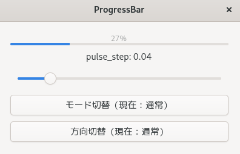
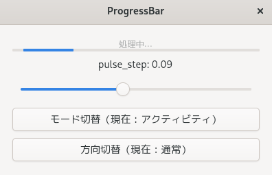

(update:2026/2/18)
Gtk::Progressbarは、「処理の進行状況」や「進行度が不明な処理の活動状態」を視覚的に示すためのウィジットです。
進行度を 0.0〜1.0 の割合で表示します。
ProgressBar の進行度の値を 0.0〜1.0 の範囲で設定するためのメソッドです。set_fraction() は、通常モード専用です。アクティビティモードでは pulse() を使うため、set_fraction() は使いません。
| void Gtk::ProgressBar::set_fraction( | double | fraction | ) |
|---|
fraction : 進行度 0.0 ～ 1.0 を表します。
0.0 ⇒ 0% 0.5 ⇒ 50% 1.0 ⇒ 100% を表します。
引数が進行度の範囲を超える場合は自動的に補正されます。
例. -1.0 ⇒ 0.0 2.0 ⇒ 1.0
ProgressBar の現在の進行度の値を取得します。
| void Gtk::ProgressBar::get_fraction() |
|---|
0.0 ⇒ 0%、1.0 ⇒ 100%、それ以外は進行中の割合を表します。
pulse()を使うモードでは、fractionは更新されないため、通常モードでのみ有効となります。
進行度が測れない状態です。
アクティビティモードでアニメーションを動かすためのメソッドです。
fraction( 0.0 ～ 1.0 )を使いません。代わりに動いていることを示すアニメーションを表示します。
どれだけ動くかはset_pulse_step()で調整します。デフォルトは 0.1(10%移動)です。
アクティビティモード（pulse モード）で、バー内部のブロックが動く「移動量」を調整するためのメソッドです。
通常モード（fraction を使うモード）では使用しません。
値は 0.0 ～ 1.0 です。デフォルトは0.1(gtkの内部値)です。
| pulse_step | ブロックの動作 |
|---|---|
| 0.01 | とてもゆっくり、落ち着いた動き |
| 0.03 | ややゆっくり |
| 0.05 | 標準的 |
| 0.1 | 速い(デフォルト) |
| 0.2 | かなり速い、忙しい印象 |
ProgressBar に表示する文字列を設定するためのメソッドです。set_show_text( true ) と組み合わせることで、進行状況や状態メッセージをユーザーに伝えることができます。
| void Gtk::ProgressBar::set_text( | const | Glib::ustring& | text | ) |
|---|
text は、ProgressBarに表示したい文字列です。
set_show_text( true ) を呼ばないと text は表示されません。
長い文字列ははみ出すため、必要に応じて set_ellipsize() を使用します。
ProgressBar にテキストを表示するかどうかを ON/OFF するためのメソッドです。
| void Gtk::ProgressBar::set_show_text( | bool | show | ) |
|---|
true ⇒ text を表示
false ⇒ text を非表示(デフォルト)
set_text( "文字列" ) で設定した内容
あるいはgtkが自動生成する進行度(例．30%)
ProgressBar に表示するテキストが長すぎる場合に、どこを省略するかを指定するためのメソッドです。ProgressBar は set_show_text( true ) を使うと文字列を表示できますが、ウィジェットの幅より長い文字列はそのままでは表示できません。そこで 省略位置を指定して、見た目を整えるのが set_ellipsize の役割です。
| void Gtk::ProgressBar::set_ellipsize( | Pango::EllipsizeMode | mode | ) |
|---|
| mode | 意味 |
|---|---|
| Pango::EllipsizeMode:NONE | 省略しない(デフォルト) |
| Pango::EllipsizeMode:START | 先頭を省略する |
| Pango::EllipsizeMode:MIDDLE | 中央を省略する |
| Pango::EllipsizeMode:END | 末尾を省略する |
ProgressBar を横向き（水平）か縦向き（垂直）にするためのメソッドです。
| void Gtk::ProgressBar::set_orientation( | Gtk::Orientation | orientation | ) |
|---|
ProgressBar の進行方向を反転させるための関数です。通常は左→右（または下→上）に進む ProgressBar を右→左（または上→下）に進むように変更できます。
| void Gtk::ProgressBar::set_inverted( | bool | inverted | ) |
|---|
#include <gtkmm.h>
#include <iomanip>
#include <sstream>
class MyWindow : public Gtk::Window {
public:
MyWindow();
virtual ~MyWindow() = default;
private:
Gtk::Box m_box;
Gtk::ProgressBar m_bar;
Gtk::Button m_button_mode;
Gtk::Button m_button_invert;
Gtk::Scale m_scale{ Gtk::Orientation::HORIZONTAL };
Gtk::Label m_scale_label;
bool m_activity_mode;
bool m_inverted;
double m_fraction;
double m_pulse_step = 0.04;
void on_scale_changed();
void on_button_mode_clicked();
void on_button_invert_clicked();
bool on_timeout();
};
MyWindow::MyWindow()
: m_button_mode( "モード切替（現在：通常）" ),
m_button_invert( "方向切替（現在：通常）" ),
m_activity_mode( false ),
m_inverted( false ),
m_fraction( 0.0 )
{
set_title( "ProgressBar" );
set_default_size( 400, 240 );
// レイアウト
m_box.set_orientation( Gtk::Orientation::VERTICAL );
m_box.set_spacing( 10 );
m_box.set_margin( 20 );
set_child( m_box );
// ProgressBar
m_bar.set_show_text( true );
m_bar.set_fraction( 0.0 );
m_bar.set_text( "0%" );
m_box.append( m_bar );
// pulse_step スライダー
m_scale.set_range( 0.01, 0.20 );
m_scale.set_value( 0.04 );
m_scale.set_increments( 0.01, 0.05 );
m_scale.set_digits( 2 );
m_scale.set_hexpand( true );
m_scale_label.set_text( "pulse_step: 0.04" );
m_box.append( m_scale_label );
m_box.append( m_scale );
m_scale.signal_value_changed().connect(
sigc::mem_fun( *this, &MyWindow::on_scale_changed ));
// モード切替ボタン
m_button_mode.signal_clicked().connect(
sigc::mem_fun( *this, &MyWindow::on_button_mode_clicked ));
m_box.append( m_button_mode );
// 方向切替ボタン
m_button_invert.signal_clicked().connect(
sigc::mem_fun( *this, &MyWindow::on_button_invert_clicked ));
m_box.append( m_button_invert );
// タイマーで更新
Glib::signal_timeout().connect(
sigc::mem_fun(*this, &MyWindow::on_timeout), 80 );
}
// スライダー変更
void MyWindow::on_scale_changed()
{
m_pulse_step = m_scale.get_value();
std::ostringstream ss;
ss << "pulse_step: " << std::fixed << std::setprecision( 2 ) << m_pulse_step;
m_scale_label.set_text( ss.str() );
if ( m_activity_mode )
m_bar.set_pulse_step( m_pulse_step );
}
// モード切替
void MyWindow::on_button_mode_clicked()
{
m_activity_mode = !m_activity_mode;
if ( m_activity_mode ) {
m_button_mode.set_label( "モード切替（現在：アクティビティ）" );
m_bar.set_text( "処理中…" );
m_bar.set_pulse_step( m_pulse_step );
} else {
m_button_mode.set_label( "モード切替（現在：通常） ");
m_bar.set_text( "進行中…" );
}
}
// 方向切替
void MyWindow::on_button_invert_clicked()
{
m_inverted = !m_inverted;
if (m_inverted) {
m_button_invert.set_label( "方向切替（現在：反転）" );
m_bar.set_inverted( true );
}
else {
m_button_invert.set_label( "方向切替（現在：通常）" );
m_bar.set_inverted( false );
}
}
// タイマー更新
bool MyWindow::on_timeout() {
if ( m_activity_mode ) {
m_bar.pulse();
}
else {
m_fraction += 0.01;
if (m_fraction > 1.0) m_fraction = 0.0;
m_bar.set_fraction( m_fraction );
m_bar.set_text( std::to_string(int(m_fraction * 100)) + "%" );
}
return true;
}
int main(int argc, char* argv[])
{
auto app = Gtk::Application::create( "progress.example" );
return app->make_window_and_run<MyWindow>( argc, argv );
}
| 通常モード | アクティビティモード |
|  |  |